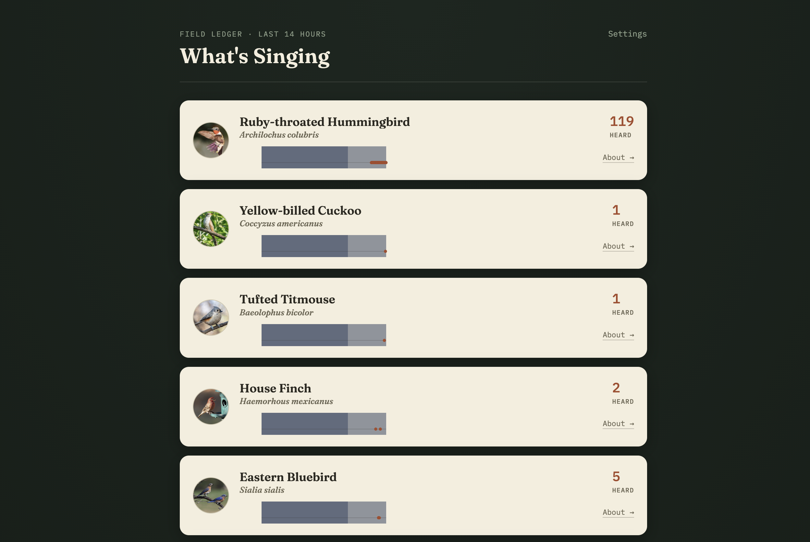

Birdwatch
Birdwatch is a backyard bird song detector inspired by the Merlin Bird ID app, except everything runs locally on a Raspberry Pi sitting by my window. A USB mic listens around the clock, and a bird ID CNN (BirdNET) identifies each species by its song, logging detections to a small local database.
The next step is to hook this up to an e-ink display inside and get a rotating cast of the local birds on the wall as artwork.
A small dashboard shows what's been heard, with counts and a day/night timeline for each species.

Built for the backyard birds of Bentonville, AR.